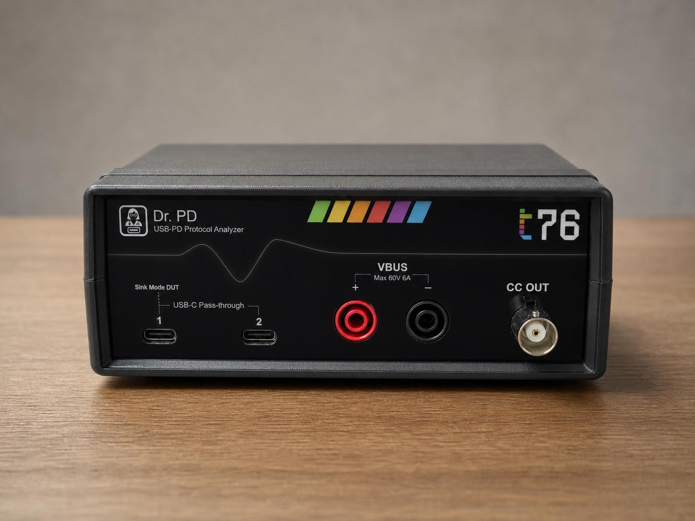
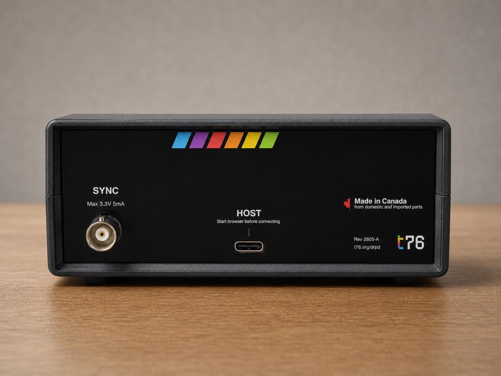
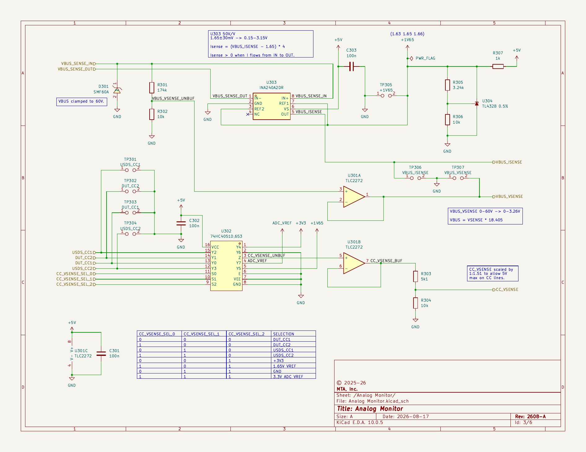
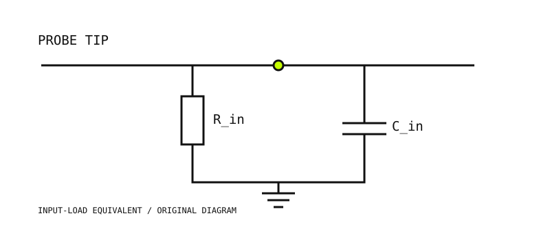
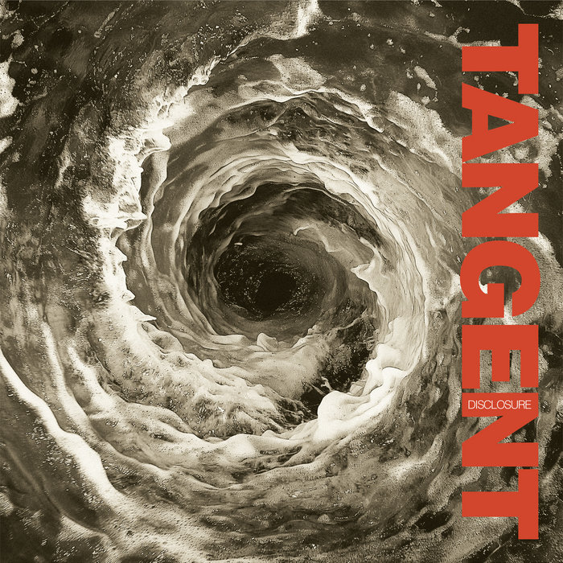
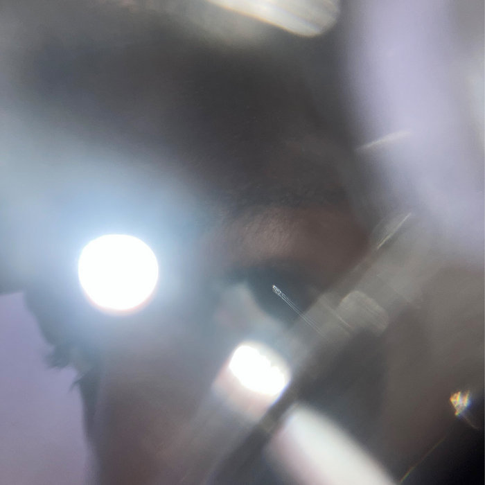
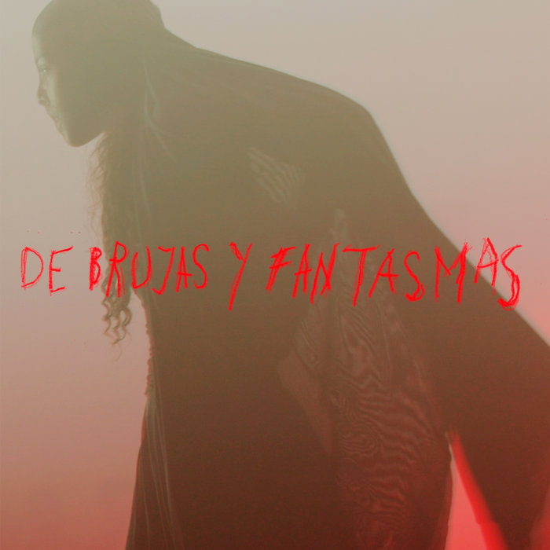

ImHex：把自己的 WAV 文件拆成可读字段
录音导出来以后，文件头里的采样率、声道数和位深各占哪些字节？ImHex 的 Pattern Language 可以把结构定义叠到十六进制视图上，跳到字段时同时定位原始偏移。项目的 wav.hexpat 已写出 RIFF/WAVE 和 fmt 块。可以把同一段声音导出为两个采样率，分别打开，先核对 samplesPerSec，再看音频数据块的长度变化。这个对照也适合检查自己写的 WAV 导出代码。

HARDWARE · SOURCE · CULTURE
Dr. PD 与 GB Interceptor
四件开源工具 · 协议与测量笔记 · 文化小栏
USB POWER DELIVERY / CARTRIDGE BUS / PCB / MEASUREMENT
Dr. PD 将 USB-C 的供电消息与电压、电流放到一起读。GB Interceptor 从卡带总线取得数据，在外接板上重建 Game Boy 画面。另有四件开源工具、两则协议与测量笔记，以及 Jordan Aceto 的可插拔滤波小板。
录音导出来以后，文件头里的采样率、声道数和位深各占哪些字节？ImHex 的 Pattern Language 可以把结构定义叠到十六进制视图上，跳到字段时同时定位原始偏移。项目的 wav.hexpat 已写出 RIFF/WAVE 和 fmt 块。可以把同一段声音导出为两个采样率，分别打开，先核对 samplesPerSec，再看音频数据块的长度变化。这个对照也适合检查自己写的 WAV 导出代码。
手头已有 FPGA 工具链生成的位流时，openFPGALoader 可以把它加载到兼容的开发板。官方入门文档把两种落点说得很清楚。装入 SRAM 可以先试一版设计，断电后这次加载会消失。写板载 Flash 适合让支持该方式的板在下次上电时重新加载。第一次可以按板型表核对下载器与板子的搭配，再选一个点灯位流试 SRAM，确认脚位和时钟后再决定要不要写入 Flash。
同一张小板要做成几联板时，KiKit 可以从 KiCad 的单板文件生成拼板，把行列间距、连接桥、板边与分板方式保存为配置。尤其适合板子经常改版，需要跟着重出制造文件的人。先用文档的规则网格例子，确认接插件有足够外伸空间，再按厂家的铣槽和 V 槽条件选分板方式。如果手工指定连接桥，可以查它从板边伸出的起点和方向，看看组板后是否真的接到相邻板或工艺边。
有了和手头硬件同版本的板位图，OpenBoardView 能把元件编号、引脚和同网连接放到可翻面的板图上。可以先搜一个容易认出的接插件，用同网高亮找它连着的测试点，再把照片上的顶面或底面对上。README 自带示例图，能看见同一网络的焊盘如何高亮。板位图用来定位电路，实际焊点是否导通仍可在断电后用表核对，也值得检查手头文件的板号是否相同。
USB-C 设备接上充电器后，最后稳定在多少伏只告诉你结果。要知道设备索取过哪一档，或电压在什么时候变化，就得同时看 CC 上的协商报文和 VBUS 上的实测曲线。Marco Tabini 团队的 Dr. PD 把两类数据记录在同一界面。串接时可观察供电端和受电端的交流，也可切到受电端模式，向充电器请求它所公告的供电档位。
打开 R2608-A 的模拟监测原理图，先分别找电压与电流。VBUS 电压经电阻分压、缓冲后进 RP2354 的 ADC。电流走串联的 5 毫欧分流电阻，压差交给 INA240A2 放大。放大器的零电流输出以 1.65 V 为基准，电流方向变了，输出就会落在基准的另一侧。原理说明还标出从分流电阻到放大器的开尔文取样，以及用于修正测量误差的校准表。
报文走另一条路径。前端把两个 USB-C 口的 CC 线送到数字接口，捕获电平边沿，PD 协议由 RP2354 固件处理。把报告中的 Source_Capabilities、Request 与 PS_RDY 找出来，可分别读到供电端公告、受电端的请求与供电状态就绪。再对照 VBUS 曲线，看电压何时升降，以及它和协议阶段的先后。
第一次读项目可以从正常的供电协商样例起步，认清电路图上 CC、VBUS 与测量参考点，再回到处理同一段事件的前端截图。官方后面板图上的修订号是 Rev 2605-A，技术段落采用仓库列出的 R2608-A 原理图。项目 10 月公开的 v1.0.0-beta.1 是固件预发行，和外壳上的硬件修订号分开看。


为了让选手用熟悉的 Game Boy 参加线上比赛，Sebastian Staacks 做了一个插在掌机和卡带之间的适配器。游戏照常在原机运行，适配器另用 USB 给电脑送出画面。它利用卡带接口上的信号重建图像，所以主机可以保持原样。对做硬件的人，这个项目尤其有意思的一点是，图像输出来自对总线活动的解释。
先看 REV2 图纸上的卡带连接器和 SN74LVC4245A。两侧卡带连接器把原有信号接通，收发器从 5 V 总线取一份信号给 3.3 V 的 RP2040。memory-bus.pio 等卡带时钟的下降沿，一次读取 GPIO 并把结果送进 FIFO。固件里一份 32 位记录便有地址、数据和控制信号，处理端据此区分一条指令和它执行中发生的其他总线访问。
难点是视频 RAM 在掌机内部。固件的一颗核心跟随卡带取指、重建图形内存，另一颗模拟图形单元 PPU 并处理 USB 传输。CPU 已决定的分支可以直接沿后续取指追踪。隐藏的数据直接写进图形内存时，画面就可能和原机有差异。作者记录过双机联机时，第二台收到的方块堆从连线进入，卡带接口观察不到这些数据。
2022 年文章里的 USB 输出是 NV12，2023 年技术演讲和 v1.2.2 源码已能看到 MJPEG。打算制作时，可先看主机、游戏和录像软件的兼容表，再按 Wiki 选 PCB 与卡槽。面对一段异常录像，可以先确认总线解释是否仍和原机同步，再追是图形重建还是电脑接收这一段出了问题。
一些 I²C 器件采用组合事务：控制器先写入内部寄存器位置，再发重复 START，重新给出目标地址并把方向位改成读，随后取回数据。中间没有 STOP，总线不会按一次完整结束来释放。它和“先结束写入，再单独开始读取”是两种时序，不能仅凭 API 名里都有 read 就认为等价。
对照目标器件的数据手册，再看驱动是否把两段消息作为同一组事务提交。寄存器指针怎样递增、是否要求重复 START，由具体器件决定。
10× 被动电压探头把送到示波器输入端的幅度衰减到探头尖端的十分之一。仪器通道倍率设置匹配后，读数才按尖端电压换算。倍率之外还要看输入阻抗：探头尖端的电容会参与被测节点的响应，尤其是高阻节点和快速边沿。一般的 1× 被动探头比 10× 型有更大的尖端电容，接上探头后，波形本身也可能改变。
记录探头型号、衰减档位、通道设置和连接方式。比较两张波形前，先确认测量条件是否一致，不只对比屏幕上的峰值。

Jordan Aceto 把模块合成器的滤波核心做成可插拔的小板，母板统一提供 ±12 V 电源、音频输入输出和控制电压。换上 ARP 4072 或后期 MS‑20 滤波板，外部接线可以沿用。他把截止频率和反馈的控制范围都设为 0–2.048 V，方便用一颗双通道 MCP4822 数模转换器驱动，两项控制各自在板上微调。翻开两种小板的 KiCad 原理图，可以从同一组排针出发，看看控制电压进入不同滤波电路后各自走向哪里。
1986 年，Gego（Gertrud Goldschmidt）用涂漆铁杆、铝和尼龙做了《无纸绘画 86/18》。作品高约 104 厘米，厚约 2.9 厘米。杆件彼此接合，组成中间留空的几何单元。大都会艺术博物馆的馆藏说明特别提到，杆件会在邻近的墙面上投下细细的影子。实物的线和墙上的线错开，构图便多出一层交叠的轮廓。
Gego 早年的 Reticulárea 是用金属线交织而成的大型网状装置。《无纸绘画》系列把她对线与空间的研究带到墙边。照明的方向一变，杆件的接点仍留在原地，投在墙上的线却会挪动。打开馆藏照，可以沿一根铁杆走到下一个接点，再想象光从斜上方照来时，影子会落在墙上什么地方。几厘米的厚度，也就成了构图的一部分。

· 10月回听 · IDM / Modular synthesis
Tangent
荷兰双人组三年后重启合作，在 IDM 节拍与合成器铺底间加入模块合成器。七首曲目的声音制作、作曲和母带均由两人负责。

· 10月回听 · Glitch / Experimental electronic
heavensouls
heavensouls 负责这张六曲电子拼贴的主要制作和混音。Alyssa Mandel 演奏萨克斯，stickerbush 在第五首献声。

· 11月回听 · Experimental electronic / Dance score
Ziúr
为 Kianí del Valle 的独舞写下六首电子配乐。编舞重释玛丽·魏格曼 1926 年的《女巫之舞》，舞者在〈Hueso De Humo〉献声。